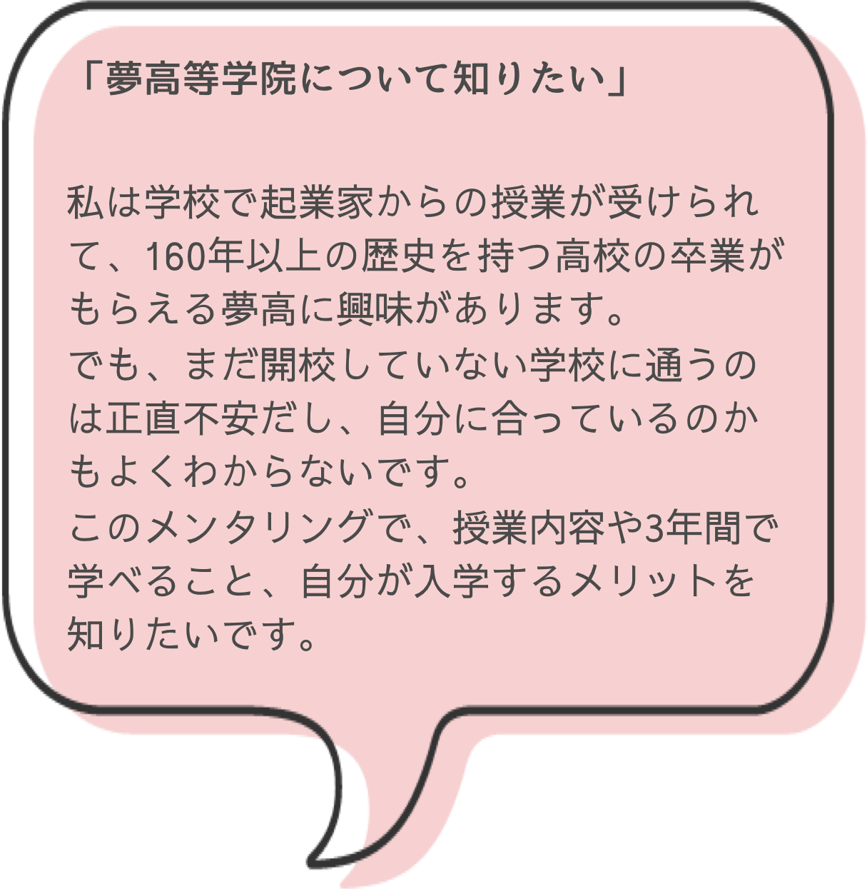
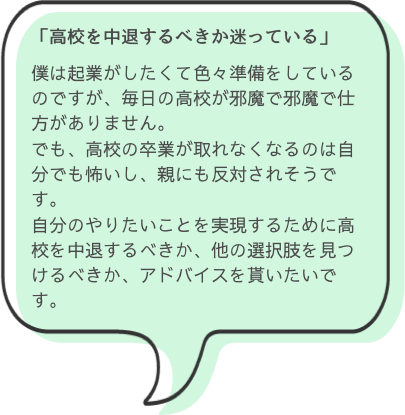
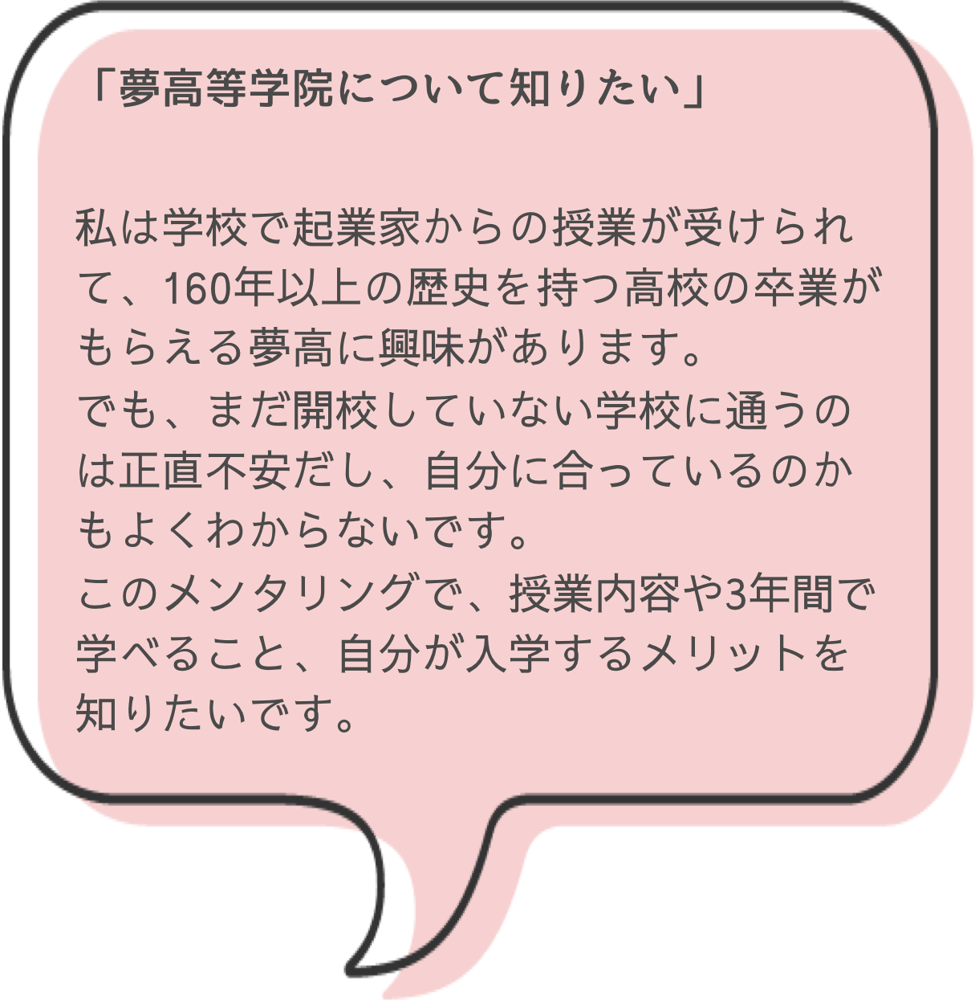
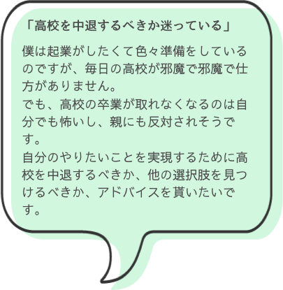

「起業したいけど、どうすればいいかわからない」
「やりたいことを聞いて、アドバイスしてほしい」
そんな中学生・高校生必見！
起業家による無料メンタリングです。
このメンタリングでできること
みなさんのご要望に合わせてメンタリング内容を決めます
タイムスケジュール
- 10分 メンタリングスタート
まずはお互いの自己紹介から始めます
- 2～20分 ヒアリング
相談者様の悩みや困っていることを聞き、今日メンタリングすることを決めます。
- 3～25分 ゴール決定
相談者様のやりたいことに合わせてゴールを決めます。
- 4～40分 必要なことを書き出す
ゴールに辿り着くためには何が必要なのか？を書き出していきます。
- 5～50分 スケジュールを立てる
4で書き出したことを元に今後のスケジュールを立てていきます。
- 6～60分 アドバイスとまとめ
4に関してのアドバイスとメンタリングのまとめを行います。
再度メンタリングが必要だと判断した場合は次回メンタリングの予定も決めます。
こんな人にオススメ！
 



メンター紹介
メンタリングページをご覧いただき、ありがとうございます。
私は今まで2社の取締役・5社以上のインターン生として、ベンチャー企業で新規サービスの立ち上げや運営をしてきました。
また、エンジニアやデザイナーとして企業でサービス開発をした経験もあります。
相談者のみなさんと同年代ということで、みなさんの気持ちをしっかり汲み取って、1人ひとりに合わせたメンタリングをします。
みなさんからの相談、お待ちしております。
初めまして。
私は、18歳の時に大学受験予備校を立ち上げ、その後教育から世の中を変えるため様々な事業を立ち上げてきました。
現在は、画一的な教育を脱却できる新プランとして、教育×「なにか」を考える日々です。
みなさんの今後の人生設計を教育の観点からサポートします。
学びについて、受験等の進学について論理的に解決していきます。
みなさんにお会い出来ることを楽しみにしています。
メンタリング開催日時
※メンタリングは1回60分です。
※臨時でメンタリング不実施日がある場合もございます。
詳しくは予約ページにてご確認ください。